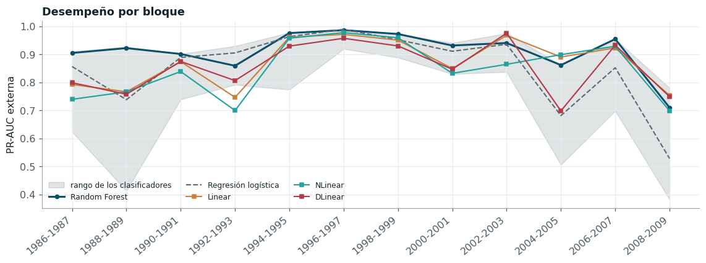

Modelos de pronóstico de series de tiempo: familia LTSF-Linear#
Los siete clasificadores anteriores reciben un conjunto de predictores construido a partir del conocimiento hidrológico del río: rezagos del caudal de Calamar, el caudal de Puerto Salgar desfasado por su tiempo de tránsito, armónicos estacionales y la distancia del caudal actual a la descarga efectiva. Una alternativa es tratar el problema como pronóstico de una serie de tiempo y dejar que el modelo aprenda directamente de la historia del caudal. La referencia actual para esa alternativa es la familia LTSF-Linear de pronóstico de largo plazo [Zeng et al., 2023], que mostró que modelos lineales simples superan a las arquitecturas basadas en transformers en los conjuntos de referencia del área.
La familia tiene tres miembros. Linear es una capa lineal sobre la ventana de historia del logaritmo del caudal; NLinear resta antes a la ventana su último valor, lo que protege al modelo de los cambios de nivel entre periodos; y DLinear descompone la ventana con una media móvil en tendencia y estacionalidad y proyecta cada componente con su propia capa lineal. Los tres pronostican el cambio logarítmico del caudal a quince días, \(z = \log(Q_{t+15}/Q_t)\), con hasta 365 días de historia de Calamar y, si la optimización lo elige, de Puerto Salgar. Como son pronosticadores puntuales, la probabilidad de banda se obtiene suponiendo un residuo gaussiano, cuya dispersión se estima fuera de muestra en el último 15 % cronológico del entrenamiento, e integrando esa distribución entre los límites de la banda.
Los tres modelos se evaluaron con el mismo protocolo que los demás: las mismas doce particiones externas, la misma validación interna, la misma semilla y el mismo presupuesto de 16 evaluaciones, con TPE como optimizador. Sus hiperparámetros son la longitud de la ventana, la penalización L2, los canales de entrada y, en DLinear, el tamaño de la media móvil.
def media_movil(x: np.ndarray, kernel: int) -> np.ndarray:
"""Media móvil centrada con relleno replicado en los extremos, como en DLinear.
Parameters
----------
x : array (n, L)
Ventanas ordenadas de la más antigua a la más reciente.
kernel : int
Tamaño impar de la ventana de la media móvil.
"""
m = (kernel - 1) // 2
relleno = np.concatenate([np.repeat(x[:, :1], m, axis=1), x, np.repeat(x[:, -1:], m, axis=1)], axis=1)
acumulada = np.cumsum(np.pad(relleno, ((0, 0), (1, 0))), axis=1)
return (acumulada[:, kernel:] - acumulada[:, :-kernel]) / kernel
class DLinear(RegressorMixin, BaseEstimator):
"""DLinear de un paso: tendencia y estacionalidad proyectadas por dos capas lineales.
Parameters
----------
longitud : int
Días de historia de la ventana (≤ 365).
kernel : int
Tamaño de la media móvil de la descomposición; se fuerza a impar.
alpha : float
Penalización L2 de las capas lineales.
canales : str
``"calamar"`` (univariado, como el DLinear original) o ``"ambos"`` (añade Puerto Salgar
como covariable).
"""
def __init__(self, longitud: int = 90, kernel: int = 25, alpha: float = 1e-3, canales: str = "calamar"):
self.longitud = longitud
self.kernel = kernel
self.alpha = alpha
self.canales = canales
def _entrada(self, W: pd.DataFrame) -> np.ndarray:
nombres = ["calamar"] if self.canales == "calamar" else ["calamar", "pto_salgar"]
L = int(self.longitud)
k = min(int(self.kernel) | 1, L if L % 2 else L - 1) # impar y no mayor que la ventana
partes = []
for c in nombres:
pre = CANALES[c]
cols = [f"{pre}_{i}" for i in range(L - 1, -1, -1)] # de la más antigua a la más reciente
x = np.log(W[cols].to_numpy(dtype=np.float64))
tendencia, estacional = descomponer(x, k)
partes += [tendencia, estacional]
return np.hstack(partes)
def fit(self, W: pd.DataFrame, z: np.ndarray):
self.lineal_ = Ridge(alpha=self.alpha).fit(self._entrada(W), np.asarray(z, dtype=np.float64))
return self
def predict(self, W: pd.DataFrame) -> np.ndarray:
return self.lineal_.predict(self._entrada(W))
class Linear(DLinear):
"""Linear de LTSF-Linear: una sola capa lineal sobre la ventana sin transformar.
La capa predice el nivel futuro, ``log Q(t+15)``, a partir de los logaritmos de la ventana;
el cambio logarítmico se recupera restando ``log Q(t)``. ``kernel`` no interviene.
"""
def _ventanas(self, W: pd.DataFrame) -> list[np.ndarray]:
nombres = ["calamar"] if self.canales == "calamar" else ["calamar", "pto_salgar"]
L = int(self.longitud)
return [np.log(W[[f"{CANALES[c]}_{i}" for i in range(L - 1, -1, -1)]].to_numpy(dtype=np.float64))
for c in nombres]
def _entrada(self, W: pd.DataFrame) -> np.ndarray:
return np.hstack(self._ventanas(W))
@staticmethod
def _nivel_actual(W: pd.DataFrame) -> np.ndarray:
return np.log(W["cal_0"].to_numpy(dtype=np.float64))
def fit(self, W: pd.DataFrame, z: np.ndarray):
nivel = np.asarray(z, dtype=np.float64) + self._nivel_actual(W)
self.lineal_ = Ridge(alpha=self.alpha).fit(self._entrada(W), nivel)
return self
def predict(self, W: pd.DataFrame) -> np.ndarray:
return self.lineal_.predict(self._entrada(W)) - self._nivel_actual(W)
class NLinear(Linear):
"""NLinear de LTSF-Linear: la capa lineal actúa sobre la ventana menos su último valor.
La normalización resta a cada canal su valor más reciente y lo suma de nuevo a la salida,
lo que protege al modelo de los cambios de nivel entre el entrenamiento y la prueba. Como
el último valor de Calamar es ``log Q(t)``, la salida normalizada es directamente el cambio
logarítmico ``z``.
"""
def _entrada(self, W: pd.DataFrame) -> np.ndarray:
return np.hstack([x - x[:, -1:] for x in self._ventanas(W)])
def fit(self, W: pd.DataFrame, z: np.ndarray):
self.lineal_ = Ridge(alpha=self.alpha).fit(self._entrada(W), np.asarray(z, dtype=np.float64))
return self
def predict(self, W: pd.DataFrame) -> np.ndarray:
return self.lineal_.predict(self._entrada(W))
Desempeño en la validación anidada#
La tabla compara la PR-AUC externa de los tres modelos con la de la mejor combinación de cada clasificador, y contrasta cada modelo LTSF-Linear con Random Forest, el mejor clasificador, con la prueba de Wilcoxon unilateral sobre los doce bloques pareados y la corrección de Holm.
| Modelo | Familia | PR-AUC externa | Rango medio | Bloques en que gana Random Forest | p Wilcoxon | p Wilcoxon (Holm) | |
|---|---|---|---|---|---|---|---|
| 0 | Random Forest | Clasificador | 0.910 ± 0.075 | 2.7500 | NaN | NaN | NaN |
| 1 | XGBoost | Clasificador | 0.905 ± 0.060 | 3.7500 | NaN | NaN | NaN |
| 2 | KNN | Clasificador | 0.888 ± 0.113 | 4.5833 | NaN | NaN | NaN |
| 3 | SVM | Clasificador | 0.886 ± 0.139 | 4.2500 | NaN | NaN | NaN |
| 4 | Linear | LTSF-Linear | 0.871 ± 0.087 | 5.5000 | 9.0 | 0.0549 | 0.0549 |
| 5 | Árbol de decisión | Clasificador | 0.866 ± 0.091 | 6.3333 | NaN | NaN | NaN |
| 6 | DLinear | LTSF-Linear | 0.855 ± 0.092 | 6.2500 | 10.0 | 0.0081 | 0.0161 |
| 7 | Regresión logística | Clasificador | 0.850 ± 0.136 | 5.5833 | NaN | NaN | NaN |
| 8 | NLinear | LTSF-Linear | 0.847 ± 0.102 | 6.3333 | 11.0 | 0.0034 | 0.0103 |
| 9 | Naive Bayes | Clasificador | 0.705 ± 0.187 | 9.6667 | NaN | NaN | NaN |
Los tres modelos LTSF-Linear alcanzan PR-AUC externas medias entre 0,847 y 0,871, y se ubican en el grupo intermedio de la tabla, junto a la regresión logística (0,850) y el árbol de decisión (0,866), por debajo de los cuatro clasificadores no lineales y por encima de Naive Bayes. Frente a Random Forest (0,910), la diferencia es significativa tras Holm para NLinear (p = 0,010) y DLinear (p = 0,016), y queda en el límite para Linear (p = 0,055), al que Random Forest supera en 9 de los 12 bloques. Ninguno se distingue de la regresión logística (p ajustado mínimo de 1,00), y los tres superan a Naive Bayes (p ajustado máximo de 0,005). Entre ellos tampoco hay diferencias atribuibles al diseño: la prueba de Friedman sobre los tres no rechaza la igualdad (p = 0,47).
El resultado tiene una lectura clara. Los modelos LTSF-Linear y la regresión logística comparten la linealidad, uno en la historia del caudal y el otro en los predictores construidos, y alcanzan un desempeño equivalente. Lo que separa al grupo de cabeza no es la forma de presentar la historia del río, sino la capacidad de representar relaciones no lineales: la pertenencia a la banda no es monótona en el caudal, porque un día con caudal muy alto está tan lejos de ella como uno con caudal muy bajo, y una dinámica que depende del estado del río no se describe con una única respuesta lineal. La descomposición de DLinear y la normalización de NLinear no aportan porque la variable que se pronostica, el cambio logarítmico, ya está referida al caudal del día, y la ventana óptima, de casi un año, permite a la capa lineal absorber la estacionalidad que DLinear separa.
La Figura 25 muestra el mismo resultado bloque a bloque.

Figura 25 PR-AUC externa por bloque de los tres modelos LTSF-Linear, del mejor clasificador y de la regresión logística. La banda gris abarca el rango de los siete clasificadores en cada bloque.#
Las curvas de los tres modelos se mueven juntas y caen en los mismos bloques que los clasificadores, lo que confirma que la dificultad de cada periodo depende del comportamiento del río y no del modelo. En la mayoría de los bloques quedan por debajo del mejor clasificador y cerca de la regresión logística, sin un bloque en que alguno de ellos destaque de manera sistemática.
Evaluación en la prueba reservada#
Con la configuración elegida por TPE sobre todo el entrenamiento (1947-2009), cada modelo se reajustó y se evaluó una única vez en 2010-2026, como clasificador de la banda y como pronosticador del caudal.
| Modelo | PR-AUC prueba | IC 95 % (bloques, BCa) | |
|---|---|---|---|
| 0 | Random Forest | 0.9495 | [0.911; 0.971] |
| 1 | Regresión logística | 0.8910 | [0.791; 0.946] |
| 2 | Linear | 0.8998 | [0.811; 0.947] |
| 3 | NLinear | 0.9041 | [0.812; 0.952] |
| 4 | DLinear | 0.9069 | [0.822; 0.953] |
| Pronóstico del caudal | RMSE prueba (m³/s) | |
|---|---|---|
| 0 | Linear | 808.3 |
| 1 | NLinear | 802.5 |
| 2 | DLinear | 793.7 |
| 3 | SVR (mejor regresor) | 642.8 |
| 4 | Ridge | 682.3 |
| 5 | Persistencia | 984.8 |
En la prueba reservada, los tres modelos alcanzan PR-AUC entre 0,900 y 0,907, por debajo de Random Forest (0,950) y por encima de la regresión logística (0,891), con intervalos de confianza que se solapan con los de esta. El orden de la validación anidada se mantiene, por tanto, fuera de muestra.
Como pronosticadores del caudal, sus RMSE en la prueba, entre 794 y 808 m³/s, mejoran a la persistencia (985 m³/s) en al menos un 18 %, pero quedan por encima de la SVR (643 m³/s) e incluso de Ridge (682 m³/s), que también es lineal. La diferencia con Ridge no proviene de la forma del modelo sino de la información: las tres configuraciones elegidas usan solo la historia de Calamar, mientras que Ridge recibe además el caudal de Puerto Salgar desfasado por su tiempo de tránsito, los armónicos estacionales y las variables de distancia a la banda. A ello se suma que sus hiperparámetros se eligieron para clasificar la banda y no para minimizar el error del caudal. El resultado indica que, en este río, el conocimiento hidrológico codificado en los predictores aporta más que una representación más elaborada de la historia del caudal.